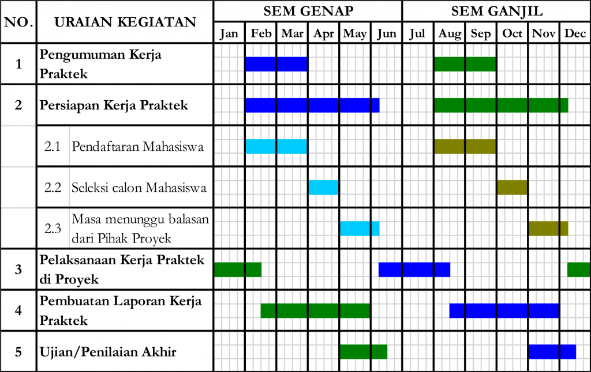

Tujuan Program Kerja Praktik
- Memberikan pengalaman visual dan pengenalan bagi mahasiswa tentang suatu kegiatan pembangunan fisik yang nyata dan segala aspeknya (kerekayasaan, kontraktual, administratif) di lapangan.
- Membina kemampuan dan keterampilan mahasiswa dengan melibatkan mahasiswa secara langsung dalam pengenalan masalah, pemecahan masalah, team work, koordinasi, dan komunikasi lisan maupun tulisan di bidang ketekniksipilan.
Tahapan Kegiatan
Berikut adalah jadwal tahapan kegiatan Kerja Praktik dan pihak-pihak yang terlibat:

(Gantt Chart Tahapan Kegiatan Kerja Praktik - Klik untuk memperbesar)
Persyaratan Kerja Praktik
- Telah lulus semua mata kuliah di tingkat 1 dan 2.
- Telah/sedang mengikuti kuliah di tingkat 3.
- Pernah/sedang mengambil mata kuliah Manajemen Konstruksi (SI-3251).
-
Telah lulus mata kuliah sampai Tingkat 3 (Sarjana Muda), sekurang-kurangnya:
- 87 SKS dengan IP ≥ 2.80
- 96 SKS dengan IP ≥ 2.40
- 105 SKS dengan IP ≥ 2.00
-
Mata kuliah Kerja Praktik harus diambil pada KSM di semester yang sedang berjalan. Jika Kerja Praktik berlanjut ke semester berikutnya, mata kuliah Kerja Praktik harus diambil kembali pada KSM semester tersebut dengan tetap memperhatikan batas maksimum 20 SKS. Jika Kerja Praktik tetap tidak dapat diselesaikan selama 2 semester, maka mahasiswa harus mengulang kembali proses Kerja Praktik dari awal. Total waktu pelaksanaan Kerja Praktik adalah maksimum 2 semester.
-
Batas waktu pelaksanaan Kerja Praktik adalah minggu terakhir (sebelum UAS) di setiap semester. Jika batas waktu tersebut dilewati, maka mahasiswa secara otomatis tetap dapat melanjutkan kegiatan Kerja Praktik, tetapi nilai Kerja Praktik dibatasi maksimum B. Jika proses Kerja Praktik kemudian berlanjut ke semester kedua, maka nilai Kerja Praktik maksimum adalah C.
Proses Kerja Praktik
Prosedur pelaksanaan, ujian, dan pengumpulan laporan dapat dilihat pada alur di bawah ini:
Sistem Penilaian
A (4.0)
Sangat baik
B (3.0)
Baik
C (2.0)
Cukup
E (0.0)
Gagal